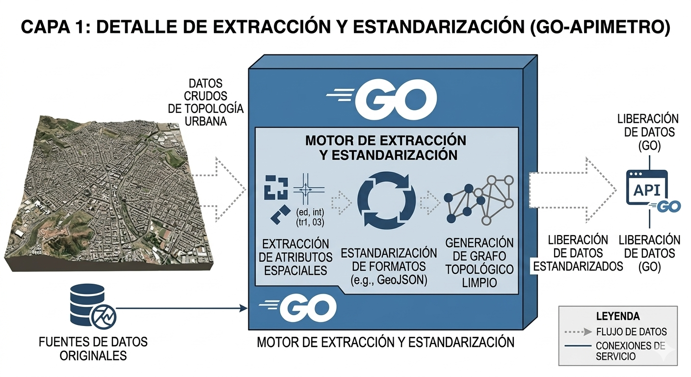
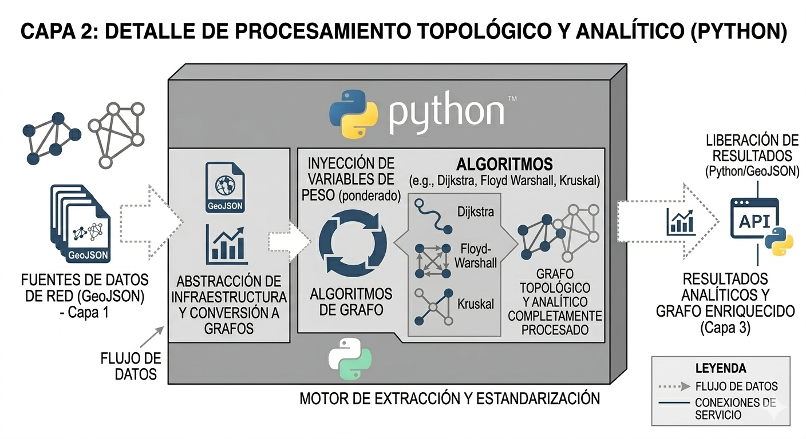
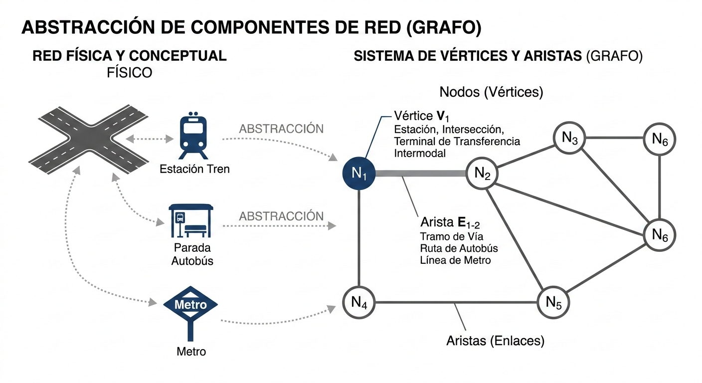
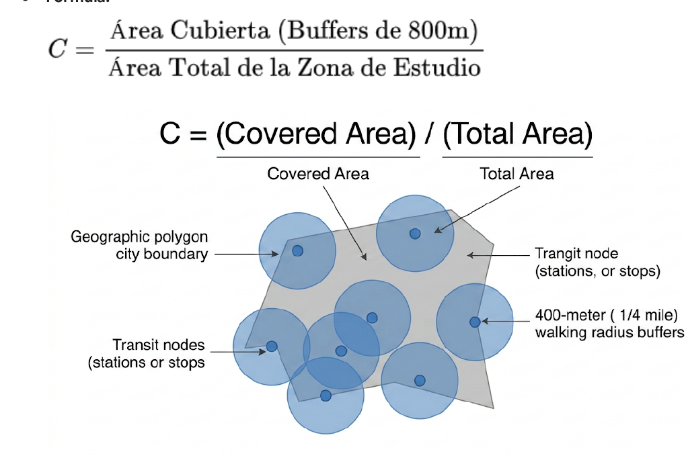
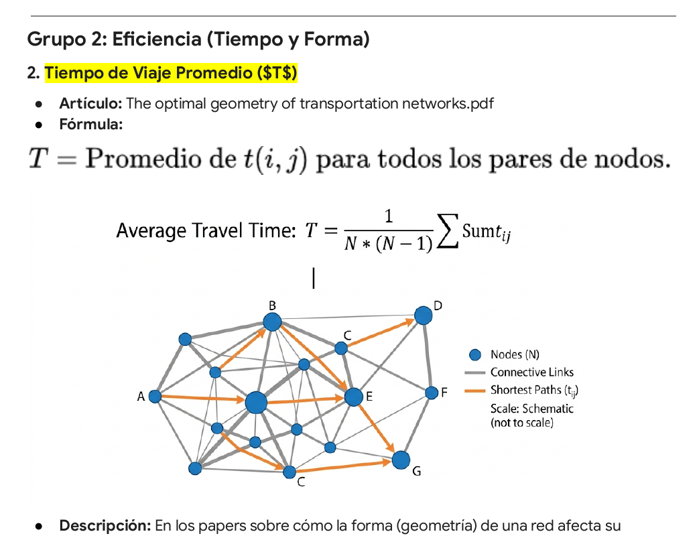
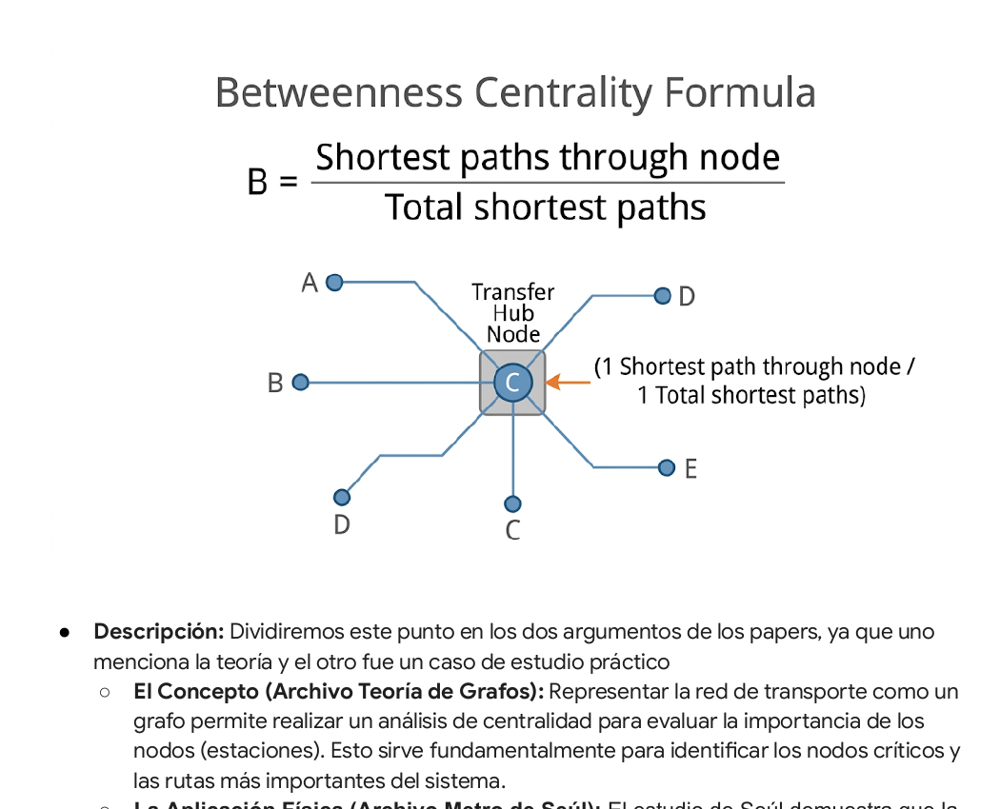
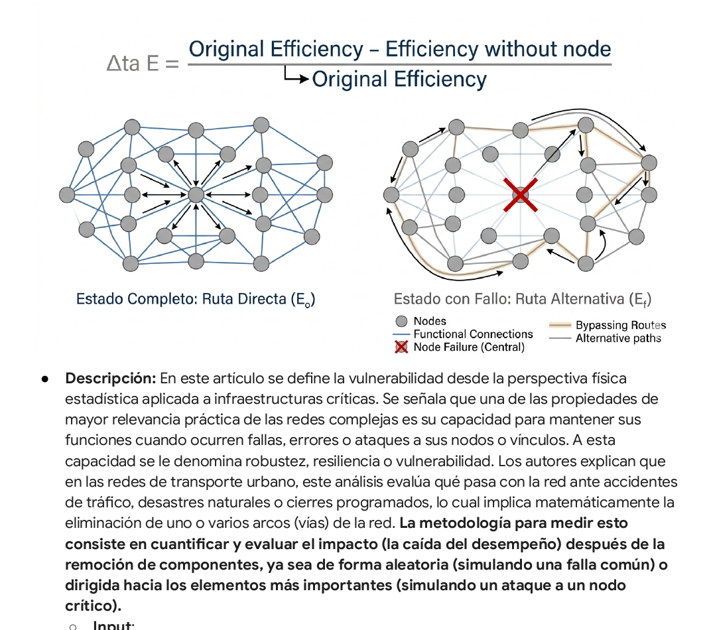

Bienvenido al Modelo VFT (Vanishing Fig-Tree)#
Motor analítico geoespacial y topológico para la evaluación de redes de transporte anillares y alimentadoras en la CDMX. Documentación generada a partir de los cuadernos de investigación y validación de la tesis TAICMAM.
📖 ¿Qué es el Modelo VFT?#
El Modelo VFT (Modelo del Punto de Higuera) es una arquitectura de software diseñada para procesar, validar y analizar matemáticamente grafos de transporte urbano masivo. Su nombre obedece a una dualidad conceptual que guía la investigación:
La Higuera (The Fig Tree): Inspirado en la metáfora literaria de Sylvia Plath, el grafo de transporte representa un árbol de decisiones críticas. Si la red capilar (RTP, microbuses) no se optimiza temporal y espacialmente, las opciones convergen en la saturación sistémica.
El Punto de Fuga (The Vanishing Point): Arquitectónicamente, el sistema actúa como el punto donde múltiples variables independientes (coordenadas 2D, fricción vial, capacidades) convergen en una perspectiva analítica unificada.
🏗️ Arquitectura en 3 Capas#
Para transformar la geografía estática en un modelo operativo y ruteable, el sistema se divide en tres capas fundamentales.
(A continuación se presentan los esquemas arquitectónicos del diseño del modelo)
Capa 1: Adquisición y Procesamiento Geométrico#
En esta fase (Hexágono de Entrada), se consumen las geometrías crudas (GeoJSON/MultiLineString) mediante la API en FastAPI. Aquí se estandarizan las coordenadas espaciales estáticas de las estaciones y trazos.

Capa 2: Modelado Topológico y Dinámico#
El núcleo matemático del sistema. Usando NetworkX y scipy, se construye el Grafo Dirigido (\(G = V, E\)). Aquí ocurre el Snapping Lógico (para evitar nodos fantasma) y se inyecta la Impedancia Temporal, calculando el tiempo de traslado continuo castigado por la congestión.

Capa 3: Evaluación y Salida (Indicadores)#
La capa de resultados donde el grafo se somete a estrés analítico para calcular las métricas que validan el comportamiento operativo de la red.

📊 Metodología de Indicadores de Tránsito#
El modelo evalúa la viabilidad y eficiencia de la red a través de tres fases de análisis progresivo:
Desglose de Indicadores de Tránsito#
Orden para Desarrollar los Indicadores#
Algunos indicadores son dependientes de otros, por lo que se ordenan por jerarquías.
Fase 1: Arquitectura Base y Análisis Espacial#
Nivel de Cobertura de la Red de Transporte (C): Indicador más independiente, se calcula puramente con análisis espacial (GeoPandas/QGIS). Se necesita el polígono de la ciudad y las coordenadas de las estaciones, no necesariamente el grafo interconectado.
Nivel de Alimentación Capilar - Fuerza Nodal: Teniendo las estaciones mapeadas, lo siguiente sería conectar las aristas e identificar qué líneas son de transporte “Masivo” y cuáles son de tipo “Superficie”. Contar las conexiones (grupo Nodal) ayudará a validar los nodos más pesados (el supuesto es que estos serán CETRAMs o interconexiones).
Índice de Ruta Directa / Detour Factor: Depende de la topología base. Se compara la distancia en línea recta (geometría plana) contra la distancia a través de la red.
Fase 2: Ponderación Dinámica (Usando datos reales)#
Es importante mencionar que aquí ya no solo se usarán indicadores matemáticos, sino que estos indicadores deben representar un caso real o cercano al mismo: Ciudad de México Real. Inyectando los tiempos, el tráfico y los castigos por trasbordar.
Coeficiente de Fricción Vial: Se tiene que calcular y asignar este multiplicador a todas las aristas de superficie. Sin este factor, el modelo asume que los camiones viajan a la misma velocidad siempre sin importar la hora.
Penalización por Transferencia: Se necesita la API de Google para calcular los tiempos de caminata y espera. De esta manera se crean las aristas artificiales-ponderadas dentro de las estaciones de transbordo con estos pesos.
⚠️ Sin tener la Fase 1 y 2 completadas no se puede avanzar a la Fase 3 y 4.
Fase 3: Evolución Global (Algoritmos de Caminos Mínimos)#
Una vez completado el grafo y con las ponderaciones de la Fase 2, se puede implementar los algoritmos que encuentren rutas mínimas y óptimas.
Tiempo de Viaje Promedio: El algoritmo a usarse es Dijkstra, sin embargo, este necesita que la red esté completa.
Centralidad de Intermediación: Se calcula casi en paralelo con el Tiempo Promedio. Al conocer cuáles son los caminos mínimos de la Fase 3, el algoritmo cuenta cuántos de esos viajes pasan por el centro (Pantitlán, Pino Suárez).
Fase 4: Pruebas de Estrés#
Esta es la fase final, donde se corre el modelo antes y después de la propuesta del Anillo Periférico para comprobar la hipótesis: “Es viable una ruta anillar de transporte público sobre el Anillo Periférico en la Ciudad de México”.
Robustez Geométrica / Vulnerabilidad: Es el indicador de mayor dependencia. Para poder hacerlo, se necesita saber qué nodo destruir (indicador #7: Centralidad de Intermediación). Tras borrar ese nodo del código, es necesario medir el impacto, calculando el indicador #6 (Tiempo de Viaje Promedio).
Construir la Fase de Red#
De GeoJSON a NetworkX#
Nodo: Conexión entre 1 o más aristas.
Todos los nodos de transferencia: Pantitlán sería un nodo para todos los nodos que salen de allí (CETRAM).
Red Conexa.
Buscar SHP/archivos de CETRAM para conceptualizarlos.
Interconexiones entre los demás transportes (Nodos de transferencia entre líneas).
Caso para RTP / Trolebús / CC#
Caso si es Adyacente o no adyacente (Considerar si es un arco de transferencia radio de 500 m).
Caso si queda muy lejos: debe ser otro caso (arco peatonal; línea recta que lo intersecta); incluir aquí el indicador de penalización, simplificarlo con líneas rectas.
Considerar el trazo de los transportes de Mexibús/Cablebús del EDOMEX.
Pesos#
Entrada: Arco 1 de la Ruta “X” al modo “Metro/Cablebus” y otra división para concesionado (RTP/CC).
Velocidad: Cada modo o sistema tiene una velocidad promedio.
Transporte Terrestre: RTP/CC/Trolebús (comparte tráfico). Tomar velocidad promedio del tráfico.
Metrobús/Metro/Suburbano/Mexibús/Cablebús: Buscar sus velocidades promedio en lugares oficiales.
Arcos peatonales: Velocidad promedio 1.5 km (estática).
Accesibilidad: Entrada al sistema / Salida.
Terrestre: RTP/Trolebús/Metrobús/Mexibús: definir como 0. Depende la transferencia por el tiempo de caminata.
Metro: Buscar o definir como estático 5-10 min (aprox).
Frecuencia: Obtener tiempo de espera (frecuencias, horarios), tomar el promedio. Hacer la observación de áreas de mejora.
Guardar Resultados en una Tabla Histórica#
Guardar de forma descriptiva e histórica para:
Rutas más cortas
Nodos utilizados
Tiempo por cada ruta
Modos utilizados
Número de transferencias
Observación: Considerar que la ruta más corta no siempre responde a la realidad (es solo para indicadores estadísticos/académicos).
Grupo 1: Indicadores Espaciales y de Cobertura#
1. Nivel de Cobertura de la Red de Transporte (\(C\))#
Artículo: Transit network analysis using a graph-oriented method and GTFS data

Descripción: En la sección sobre la evaluación de accesibilidad (Accessibility Assessment) y en la tabla de indicadores de su caso de estudio (Table 2), los autores explican cómo evaluar la cobertura espacial usando los datos de la red.
Input: Las coordenadas de las posiciones de las paradas (obtenidas del GTFS) y los archivos de límites territoriales (Boundary files).
Proceso: El software traza áreas de influencia, como un buffer de 500 metros alrededor de cada estación, simulando la distancia promedio aceptable que una persona puede caminar.
Output: Permite identificar el número o la proporción de individuos que viven dentro de cierta distancia de la red de transporte. Esta medida permite evaluar el nivel de accesibilidad en el territorio y señalar con precisión dónde deben ocurrir las mejoras.
NOTAS:
Cada buffer es de 15 min (promedio/ideal).
Isocronas/Buffer normal (círculo): Tomar la implementación Isocronas. Bajar red vial de OpenStreetMaps. Hacer isócronas con las analogías de QGIS/Python. Esto es para definir áreas-polígonos. Esto se superimpone al censo INEGI para ver cuántas personas le cubre por área (cuántas personas hay por isocrona).
Desarrollo Práctico: Supongamos que la CDMX tiene 1,500 km² de área urbana. Cada estación genera un círculo de 2 km² de cobertura.
Escenarios:
Bad Case: Solo hay Metro en la alcaldía Cuauhtémoc. Área cubierta = 150 km². \(C = 150 / 1500 = 0.10\) (10% de cobertura).
Best Case: Hay una estación cada 1.5 km en toda la ciudad. \(C = 1500 / 1500 = 1.0\) (100% de cobertura).
Real Case (CDMX): Actualmente la red masiva cubre unos 450 km² (\(C = 0.30\)). Al trazar la línea de Periférico en QGIS, se agregan 60 nuevas estaciones. La cobertura sube a 600 km² (\(C = 0.40\)).
Táctica de Programación (Viabilidad: Alta): En Python se usa la librería GeoPandas. Se carga el GeoJSON de nodos, se aplica la función
gdf.buffer(800)y luegounary_unionpara fusionar los círculos superpuestos. Finalmente, se divide el área resultante entre el polígono de la CDMX.
Grupo 2: Eficiencia (Tiempo y Forma)#
2. Tiempo de Viaje Promedio (\(T\))#
Artículo: The optimal geometry of transportation networks

Descripción: En los papers sobre cómo la forma (geometría) de una red afecta su eficiencia, los autores plantean el tiempo de viaje como la métrica absoluta a optimizar:
El criterio de optimidad en su modelo general consiste en minimizar el tiempo promedio de viaje entre pares de puntos (elegidos independientemente según su distribución).
Para calcular este tiempo, se considera que la ruta de viaje se compone de segmentos en el plano que se recorren a una velocidad baja (caminando) y cualquier ruta dentro de la red que se recorre a una velocidad mayor. Matemáticamente, el tiempo de viaje promedio (\(\tau\)) se define a través de una integral doble que considera el tiempo mínimo de viaje entre pares de puntos ponderado por sus densidades.
Al evaluar formas simples como la red en estrella (puramente radial) y combinaciones con anillos, los autores demuestran que a medida que la longitud de la red aumenta, ocurre una transición brusca en un valor crítico en el que aparece un bucle o anillo.
Input: Se utilizará el grafo de la CDMX mapeado en Python (NetworkX) donde cada arista ya tiene asignado un “peso” en tiempo (que ya incluye el Factor de Fricción - Coeficiente de Fricción Vial).
Proceso: Mediante algoritmos de caminos mínimos (Dijkstra), el código hecho en Python calculará cuánto tiempo toma ir del Nodo A al Nodo B. Luego, sumará y promediará los tiempos de viaje de todas las combinaciones posibles de estaciones (o de una muestra representativa de orígenes y destinos).
Output: Un número global (por ejemplo, 48.5 minutos).
Consideraciones:
Para este indicador, se hará una simulación o corrida del programa en la red actual (la real) y después se hará una simulación con la ruta anillar propuesta.
Tener en cuenta los cambios de modo: Nodo “A” a Nodo “B” (tomar en cuenta el promedio de transferencia con los datos estáticos definidos) y repetir esto con los demás nodos para “B” con sus conexiones (considerando la transferencia de sistemas MB/Metro/RTP).
Desarrollo Práctico: Imaginemos una red de 5 estaciones. Se calculan todos los viajes posibles (Estación 1 a 2, 1 a 3… 4 a 5) y se promedian los minutos.
Escenarios:
Best Case: Todos los nodos están conectados directamente con tren bala. Promedio \(T = 15\) minutos.
Bad Case: Es una línea recta saturada; para ir del nodo 1 al 5 haces 2 horas. \(T = 120\) minutos.
Real Case (CDMX): En una red radial, ir de Perisur a Naucalpan te obliga a entrar hasta el centro y salir. El promedio global es \(T = 85\) mins. Al añadir el arco del Anillo Periférico en el grafo, el algoritmo encuentra un atajo por fuera, reduciendo el promedio matemático global a \(T = 65\) mins.
Táctica de Programación (Viabilidad: Alta): En Python, usando la librería NetworkX, se ejecuta la función
nx.average_shortest_path_length(G, weight='tiempo_minutos'). Es una sola línea de código, altamente eficiente.
3. Índice de Ruta Directa (Detour Factor o Direct Index)#
Artículo: Transit network analysis using a graph-oriented method and GTFS data
Descripción: El artículo aborda cómo la geometría de la red de transporte cambia constantemente y cómo es necesario caracterizarla sistemáticamente. Para lograrlo, los autores proponen un método orientado a grafos donde los datos GTFS se importan a una base de datos de grafos.
Input: Las coordenadas (Latitud/Longitud) de un nodo de origen y un nodo de destino, junto con la topología de la red ya modelada en la base de datos de grafos (las Capas 1 y 2 de la arquitectura propuesta).
Proceso: Primero, el software mide la “Distancia Euclidiana” (la línea recta matemática trazada como si volaras en helicóptero entre ambos puntos). Segundo, utilizando los algoritmos integrados, el sistema calcula la distancia del camino más corto obligado a viajar por la infraestructura real de la red. Finalmente, se divide la distancia de la red entre la distancia en línea recta.
Output: Un factor numérico (ratio) siempre igual o mayor a 1.0.
⚠️ Tomar en cuenta: Este medidor no toma en cuenta los pesos ponderados, simplemente la ubicación tal cual está en el mapa. Es un buen indicador para aumentar la cobertura y nuevas rutas, pero no para medir la suposición actual de la red (sistema actual bajo términos reales).
Desarrollo Práctico: Viaje de Xochimilco a Santa Fe. En línea recta son 15 km.
Escenarios:
Best Case: Vas en helicóptero. \(DI = 15 / 15 = 1.0\) (Eficiencia perfecta).
Bad Case: El transporte te hace ir hasta Indios Verdes y bajar. Distancia de red = 50 km. \(DI = 50 / 15 = 3.33\) (Pésimo diseño).
Real Case (CDMX): Actualmente la red te hace rodear por Mixcoac y Tacubaya (Distancia = 28 km). \(DI = 1.86\). Con el Anillo Periférico, la distancia de red baja a 18 km. El nuevo \(DI = 1.20\).
Táctica de Programación (Viabilidad: Media/Alta): Se usa la librería Shapely o Geopy para calcular la distancia euclidiana (haversine) entre dos coordenadas Lat/Lon, y se divide entre el resultado de distancia arrojado por el camino más corto de NetworkX.
4. Penalización por Transferencia (TOMAR EN CUENTA PARA RUTAS MÁS CORTAS)#
Artículos: Aplicación de la Teoría de Grafos en la Optimización de Redes de Transporte, The optimal Geometry of Transportation Networks
Descripción: Se usan dos artículos para sustentar este indicador. El primero, “The Optimal Geometry of Transportation Networks”, habla de un criterio de optimidad principal en el diseño de redes: minimizar el tiempo promedio de viaje entre los pares de puntos del sistema. El segundo, “Aplicación de la teoría de grafos en la optimización de redes de transporte”, hace esto en un entorno real, modelando grafos y sus características. El problema se resuelve modelando la red como un grafo dirigido valorado, donde las aristas son ponderadas por tiempo y costo. La teoría de grafos provee algoritmos exactos de caminos mínimos (Dijkstra y Floyd-Warshall) para determinar la ruta óptima entre cada par de nodos. En la práctica, el uso de estos algoritmos logra reducir estadísticamente los tiempos promedio (ej. reducciones del 8%) y los costos totales de la red.
Input: Dividido en dos secciones:
Nodos-Aristas: Las estaciones de la CDMX y de la propuesta del Anillo Periférico serán los nodos. Las vías (Metro, RTP o el nuevo anillo) serán las aristas.
Ponderación - Penalización: A las aristas se les asignará el peso del tiempo de viaje. En el documento está justificado asignar pesos de costo.
Proceso: Se programará en Python el Algoritmo de Dijkstra o el Algoritmo de Floyd-Warshall para que el sistema busque el camino más corto entre las periferias de la CDMX.
Output (Supuesto): Al cobrar la “penalización” (peso alto) por cambiar de línea en el centro, los algoritmos arrojarán que viajar por el Anillo Periférico continuo es la solución óptima.
⚠️ Tomar en cuenta: Tratar el transbordo como un “castigo estático” de 5 minutos para todas las estaciones es un punto débil, por lo que se necesita una variable dinámica que dependa de la estación y la hora. Un transbordo real se compone de dos factores: Tiempo de caminata + Tiempo de espera en Andén. Se puede hacer un cálculo supuesto o extrayendo de la base de datos oficial; sin embargo, se preferiría usar información actualizada en tiempo real proporcionada por Google Maps Transit API:
Programar un servicio que haga peticiones automatizadas a la API pidiendo indicaciones de viaje (Directions API en modo transit) entre dos estaciones contiguas que fuercen un transbordo.
En la respuesta JSON se captura el nodo
"transit_details"y"walking", el cual se traduce en esperar X minutos y caminar X minutos.Se hace esta petición cambiando el
departure_time(5:00 am, 8:00 am, 2:00 pm, 7:00 pm). La API ajustará los tiempos de espera y caminata basándose en el tráfico peatonal histórico y los horarios reales.Supuesto importante: Los datos oficiales son datos de escritorio y pocas veces representan la realidad de la red a la fecha en que se hace el estudio. La opción de la API de Google, aunque más trabajosa, sería una mejor opción.
Desarrollo Práctico: Un viaje toma 30 mins de rodamiento de trenes.
Escenarios:
Best Case: Es viaje directo en la misma línea. Total = \(30 + (0 \times 12) = 30\) mins.
Bad Case: Tienes que transbordar en Pantitlán, Chabacano y Tacubaya. Total = \(30 + (3 \times 12) = 66\) mins.
Real Case (CDMX): La ruta anillar, aunque sume más kilómetros de rodamiento (ej. 40 mins), evita 2 transbordos en el centro. Total Anillo = \(40 + 0 = 40\) mins (26 mins más rápido que el Bad Case).
Táctica de Programación (Viabilidad: Alta): En el archivo GeoJSON, no se declara a “Pantitlán” como un solo punto, sino como
"Pantitlan_L1","Pantitlan_L9", etc. Python crea aristas peatonales que los unen y les asigna estáticamente un atributoweight=12. El algoritmo de Dijkstra hará el resto automáticamente sumándole los pesos ponderados correspondientes.
Grupo 3: Topología y Rigor Matemático#
5. Centralidad de Intermediación (\(B\)) (TOMAR TAMBIÉN RUTAS MÁS CORTAS)#
Artículos: Statistical analysis of the Metropolitan Seoul Subway System, Aplicación de la Teoría de Grafos en la Optimización de Redes de Transporte

Descripción: Se divide en los dos argumentos de los papers:
El Concepto (Teoría de Grafos): Representar la red de transporte como un grafo permite realizar un análisis de centralidad para evaluar la importancia de los nodos (estaciones). Esto sirve fundamentalmente para identificar los nodos críticos y las rutas más importantes del sistema.
La Aplicación Física (Metro de Seúl): El estudio de Seúl demuestra que la red se define por los caminos más cortos (\(n_{ij}\)) entre las estaciones. El “peso” o importancia de una conexión representa el flujo real de pasajeros que transitan por ella, y la fuerza de una estación corresponde al volumen de pasajeros que la utilizan. En un sistema metropolitano, la mayoría de los flujos se concentran en estaciones específicas que actúan como núcleos urbanos.
Input: El grafo de NetworkX ya construido con nodos y tiempos.
Proceso: Python tiene una función nativa llamada
nx.betweenness_centrality(G, weight='peso_real'). Al ejecutarla, el algoritmo simula que millones de personas viajan desde todos los orígenes posibles hacia todos los destinos posibles usando la ruta más rápida. Cada vez que una persona pasa por una estación, esa estación gana un punto de centralidad.Output (Dividido en Antes y Después):
Antes de la propuesta del Anillo (Supuesto): Se mide la centralidad de las estaciones del centro de la CDMX, el cual será muy alto (cuellos de botella).
Agregando la propuesta del Anillo (Supuesto): Se vuelve a correr el algoritmo con la propuesta del Anillo Periférico. Matemáticamente, el peso/afluencia se moverá por el anillo y con ello, el centro caerá drásticamente y la centralidad del periférico subirá.
Supuesto Final: Algorítmicamente, el proyecto del Anillo Periférico despresurizará el núcleo de la ciudad.
Fórmula extra — variables:
\(B\) = Centralidad de Intermediación de la estación \(v\).
\(\Delta(st)\) = Número total de caminos más cortos desde la estación de origen \(s\) hasta el destino \(t\).
\(\Delta(st)_v\) = Número de esos caminos más cortos que pasan forzosamente por la estación \(v\).
Desarrollo Práctico: ¿Cuántos viajes de la ciudad están obligados a usar la estación “Centro Médico” como puente?
Escenarios:
Best Case (Malla perfecta): Como en Manhattan, hay muchas opciones. Centro Médico tiene \(B = 0.05\) (solo el 5% de los viajes pasa por ahí).
Bad Case (Estrella perfecta): Todas las líneas cruzan por un único nodo central. Ese nodo tiene \(B = 0.95\) (Cuello de botella fatal).
Real Case (CDMX): Pantitlán y Pino Suárez tienen scores altísimos (\(B \approx 0.40\)). Al encender la línea del Periférico en Python, los viajes que iban de Norte a Sur por el poniente ya no entran al centro. El score de Pino Suárez caerá a \(0.20\).
Táctica de Programación (Viabilidad: Alta): NetworkX tiene la función nativa
nx.betweenness_centrality(G, weight='tiempo'). Retorna un diccionario con el score de cada estación.
6. Robustez Geométrica (Vulnerabilidad)#
Artículo: Vulnerabilidad de Redes Complejas y Aplicaciones al Transporte Urbano: Una Revisión de la Literatura

Descripción: En este artículo se define la vulnerabilidad desde la perspectiva física estadística aplicada a infraestructuras críticas. Se señala que una de las propiedades de mayor relevancia práctica de las redes complejas es su capacidad para mantener sus funciones cuando ocurren fallas, errores o ataques a sus nodos o vínculos. A esta capacidad se le denomina robustez, resiliencia o vulnerabilidad. Los autores explican que en las redes de transporte urbano, este análisis evalúa qué pasa con la red ante accidentes de tráfico, desastres naturales o cierres programados. La metodología para medir esto consiste en cuantificar y evaluar el impacto (la caída del desempeño) después de la remoción de componentes, ya sea de forma aleatoria (simulando una falla común) o dirigida hacia los elementos más importantes (simulando un ataque a un nodo crítico).
Input:
El grafo de NetworkX ya construido con nodos y tiempos.
Indicador de Tiempo de Viaje Promedio.
Proceso: Se hará una simulación de “Ataque” o “Remoción” de un nodo: eliminar intencionalmente el nodo con mayor Centralidad de Intermediación (por ejemplo, que “cierre” Pantitlán o Tacubaya por una emergencia). Tras borrar ese nodo y todas sus conexiones, se vuelve a correr el cálculo del Tiempo de Viaje Promedio de toda la ciudad.
Output (Dividido en Antes y Después):
Antes de la propuesta del Anillo (Supuesto): Se mide la vulnerabilidad que tendrá la red sin la propuesta del anillo.
Agregando la propuesta del Anillo (Supuesto): Se vuelve a correr el algoritmo con la propuesta del Anillo Periférico. Matemáticamente, la vulnerabilidad ante este tipo de fallas disminuirá.
Supuesto Final: Al borrar el nodo central, el algoritmo encontrará automáticamente una ruta alternativa fluyendo alrededor del cierre a través del Periférico. El Tiempo Promedio subirá un poco, pero la ciudad no se desconectará. Esto demuestra matemáticamente la redundancia y la “Robustez Geométrica” que la propuesta del Anillo Periférico le aporta a la CDMX.
Notas: Considerar Nodos centrales (con todos los arcos subyacentes). A la nueva red se le corren las rutas más cortas y después se compara con las demás propuestas.
Desarrollo Práctico: ¿Qué pasa si cerramos Indios Verdes por una inundación? O más nodos (no solo 1).
Escenarios:
Best Case: La red tiene tantas rutas alternativas (anillos) que la eficiencia casi no cambia. Caída del \(2\%\).
Bad Case: La red se parte en dos mitades incomunicadas. Caída del \(90\%\).
Real Case (CDMX): Sin el proyecto, apagar un nodo de transbordo en el centro tira la eficiencia de la red un \(35\%\). Con el Anillo, el algoritmo de Python desvía a la gente por la periferia, y la caída del sistema es solo del \(12\%\).
Táctica de Programación (Viabilidad: Alta): Un bucle
foren Python. Se clona el grafo, se usaG.remove_node('Indios_Verdes')y se vuelve a calcular la eficiencia global.
Grupo 4: Tráfico Mixto (RTP / Concesionados)#
7. Factor de Fricción Vial (\(CF\))#
Artículo: Transit network analysis using a graph-oriented method and GTFS data
Descripción: En su análisis sobre cómo los datos estáticos no siempre reflejan la realidad, los autores dedican un apartado a las limitaciones de los horarios programados y cómo el algoritmo debe adaptarse a la calle. Los autores reconocen que los datos estandarizados (como el GTFS normal) representan únicamente horarios planificados. Para solucionar esto al momento de correr el modelo matemático, explican que en horas pico algunos viajes entre paradas son inevitablemente más largos. Por lo tanto, afirman que utilizar estos tiempos ajustados devuelve estimaciones mucho más precisas al correr el algoritmo de Dijkstra.
Input: En los archivos GeoJSON y en la lógica de Python, cada arista tiene un peso base que representa el “tiempo ideal” (ej. 10 minutos para recorrer 5 km). Se necesita clasificar qué líneas son confinadas (Metro) y cuáles son de tráfico mixto (RTP/Concesionados).
Proceso: En Python, se puede introducir una variable multiplicadora (el Factor de Fricción). Si el algoritmo detecta que la línea evaluada es de tráfico mixto, multiplica su tiempo ideal por un factor de castigo (ej. 1.8x) para simular la congestión en hora pico. Si es una línea de Metro, el multiplicador es 1.0x (no sufre fricción).
Output: Al correr el algoritmo de caminos mínimos (Dijkstra), el software “aprenderá” que ir por la calle es lento e ineficiente. El output arrojará que los usuarios prefieren dar más vuelta en un sistema confinado. Esto justifica operativamente que el nuevo Anillo Periférico debe contar con carriles exclusivos.
Factor de Fricción — Coeficiente de Fricción Vial: El Coeficiente de Fricción Vial (\(CF\)) es un multiplicador dinámico que permite calibrar los modelos topológicos de transporte. Su utilidad principal es corregir la sobrestimación de eficiencia en las rutas de transporte público que operan en tráfico mixto (sin carril confinado). Al integrar este coeficiente en los algoritmos de búsqueda de caminos mínimos (ej. Dijkstra), el “peso” temporal de las aristas en el grafo varía según la hora del día.
Metodología de Recolección de Datos: Para evitar el sesgo de los horarios teóricos institucionales, los tiempos de viaje (\(T\)) se extraerán mediante peticiones automatizadas a la API de Google Maps. Las peticiones se programarán para extraer un promedio representativo de los días hábiles (Lunes a Viernes) en los siguientes cortes horarios estratégicos (Supuestos):
Hora
Descripción
05:00 hrs
Periodo de Flujo Libre — denominador \(T_{ideal}\)
06:30 hrs
Inicio de rampa ascendente de demanda matutina
08:00 hrs
Pico Máximo Matutino (Entrada a escuelas y oficinas)
11:00 hrs
Periodo Valle matutino (Estabilización del flujo)
13:00 hrs
Inicio de rampa ascendente vespertina (Salida escolar)
15:00 hrs
Pico Máximo de Comida / Salida de oficinas
17:00 hrs
Periodo Valle vespertino
19:00 hrs
Pico Máximo Nocturno (Regreso masivo a la periferia)
21:00 hrs
Descenso de la demanda
23:00 hrs
Retorno a condiciones de flujo casi libre
Aplicación en el Modelo de Python: A cada arista del grafo que represente una línea de RTP o autobús concesionado, se le asignará un arreglo (array) con estos 10 coeficientes. Durante la simulación, si el usuario virtual inicia su viaje a las 8:00 am, Python multiplicará el tiempo ideal del tramo por el \(CF_{08:00}\) (que podría ser de 1.85). Las rutas confinadas (Metro) mantendrán un \(CF\) constante de 1.0 en todo momento.
⚠️ NOTA: Tomar en cuenta que para el tamaño de la red, usar la API de Google sería algo caro. Usar TOMTOM: Velocidades promedio (hora pico / sin hora pico).
Desarrollo Práctico: Un tramo de 5 km debería recorrerse en 10 minutos si la calle estuviera vacía.
Escenarios:
Best Case (Metro): Flujo continuo bajo tierra. \(CF = 1.0\). Tiempo = 10 mins.
Bad Case (RTP en lluvia): Tráfico paralizado. \(CF = 3.0\). Tiempo = 30 mins.
Real Case (CDMX): En el código, se asigna a las rutas de RTP un multiplicador dinámico según la hora. Esto enseña al algoritmo que no puede confiar en el RTP para cruzar la ciudad rápido, justificando que el Anillo Periférico debe ser Metrobús o Tren (confinado, \(CF=1.0\)).
Táctica de Programación (Viabilidad: Media): Requiere que el GeoJSON tenga una columna llamada
tipo_sistema(ej."Metro","RTP"). En Python se itera sobre las aristas:if tipo == 'RTP': weight = base_time * 1.8.
8. Nivel de Alimentación Capilar#
Artículo: Statistical analysis of the Metropolitan Seoul Subway System
Descripción: El artículo evalúa las propiedades estadísticas de la red basándose en el grado (\(k\)) de los nodos (el número de conexiones) y en la fuerza (\(s\)) de los nodos, la cual suma el “peso” (los flujos de pasajeros) de todos los enlaces conectados a una estación. La distribución de la fuerza de los nodos sigue un comportamiento estadístico específico (log-normal), lo que indica la existencia de grandes concentradores (hubs) en el sistema.
CDMX (Caso Particular): Las líneas de alta capacidad (Metro/Periférico) deberían ser las arterias principales, mientras que las líneas de superficie (RTP, Trolebús, Microbuses) son los “capilares” que recogen a la gente de las colonias y la inyectan en los hubs (estaciones masivas o CETRAMs).
Input ⚠️ (Considerar adecuación importante para la formación de los pesos): A las aristas que representan vías de superficie se le pondrá un atributo (ej.
tipo = 'superficie'), y a las del anillo o metro se le pondrátipo = 'masivo'. Adicionalmente, tendrán unweightque represente su capacidad de pasajeros.Proceso: Función que itere sobre los nodos del Anillo Periférico. Para cada estación, el algoritmo filtrará y sumará únicamente el número de aristas de
tipo = 'superficie'(Grado Capilar) y sus capacidades (Fuerza Capilar).Output (Supuesto): El algoritmo arrojará un número que cuantifica el volumen potencial de personas que el Anillo Periférico absorberá desde los barrios periféricos. Matemáticamente demostrará que el anillo no es una línea aislada, sino un “mega colector” capilar, justificando su viabilidad comercial y operativa.
Variables de la fórmula:
\(C_i\) = Nivel de Alimentación Capilar (Fuerza Nodal) de la estación masiva \(i\).
\(S\) = Subconjunto de rutas que pertenecen exclusivamente a la red de superficie.
\(A_{ij}\) = Matriz de adyacencia (1 si la ruta \(j\) conecta con la estación \(i\), 0 si no).
\(w_{ij}\) = Peso de la conexión (capacidad de pasajeros por hora o flujo real).
Desarrollo Práctico: ¿Cuántos microbuses alimentan a la estación Taxqueña?
Escenarios:
Best Case: Las rutas alimentadoras se distribuyen equitativamente a lo largo de varias estaciones. \(k_{in} = 5\) rutas por estación.
Bad Case: Todos los camiones de una delegación completa desembocan en una sola puerta de Metro. \(k_{in} = 150\).
Real Case (CDMX): Cuatro Caminos e Indios Verdes son “Bad Cases” de libro de texto. Usando Python, se mapeará que el Anillo Periférico interceptará unas 40 rutas alimentadoras antes de que lleguen al centro, bajando la presión de Indios Verdes.
Táctica de Programación (Viabilidad: Alta): Simplemente se extrae el grado del nodo (node degree) usando
G.degree('Indios_Verdes')en NetworkX y se grafica un histograma en Matplotlib o Seaborn para mostrar visualmente el cuello de botella.
*Usa el menú lateral para navegar por los reportes detallados de la construcción de grafos, análisis de impedancia y visualizaciones espaciales.*